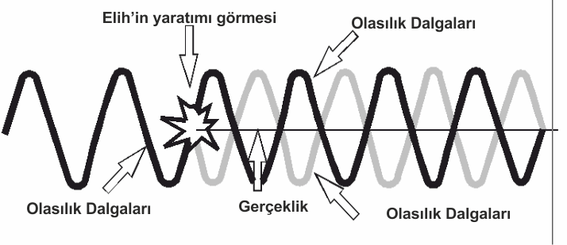
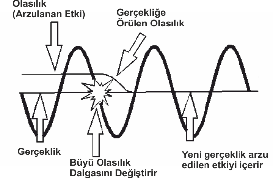
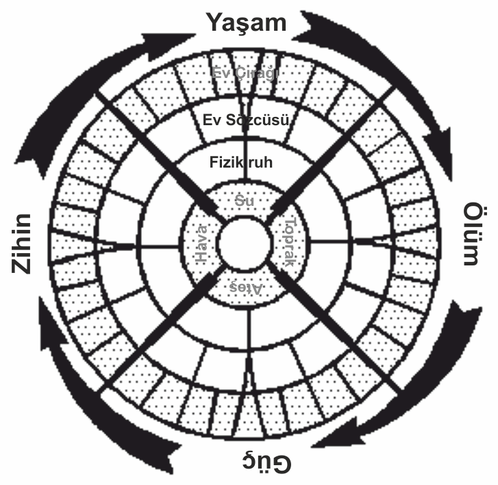
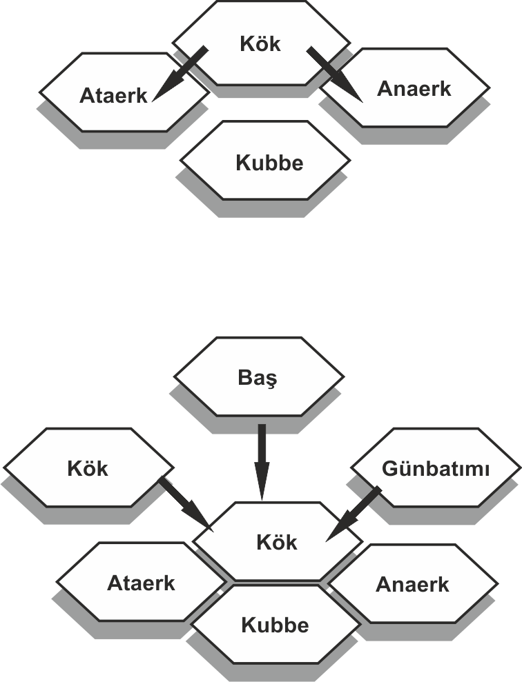
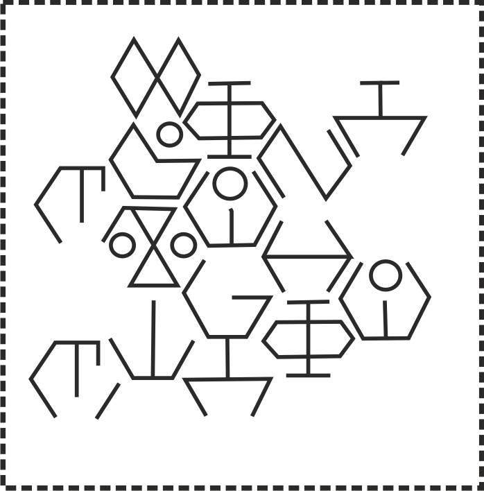
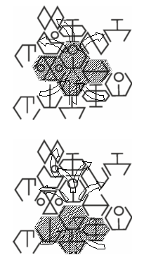

Büyü, her iki âlemde de işitilebilen bir gökgürültüsüdür. Gücü, tüm Varoluş'un temellerinde yankılanır. Yaratılışın şimşeğini aksettirir Sesinde, yaşam ve ölüm vaadi işitilir. İmrenilecek ve korkulacak bir güçtür.
Teoristler, büyünün gücünü, Tümleşikevren'in ilk yaratılışından aldığını söylerler. En başta Elihn, Bir Olan Tanrı, elini Kaos'un ortasına uzatır Elinin hareketi Kaos'u, sonsuz yaratım olasılıkları halinde düzenler. Bu hareket, Kaos'tan çıkan ilk Düzen'dir. Başlangıç Dalgası veya kısaca Başlangıç olarak adlandırılır.
Elihn Başlangıç'ta göksel olanla fiziksel olanı görür ve onun görüşü bunları mevcut kılar. Tinsel ile fizikselin yaratımında Başlangıç, kendi sonsuz olasılıkları ile iki ayrı dalgaya ayrılır, iki dalga, kıvrılarak birbirinden uzaklaşır, sonra yine yaklaşır. Dalgaların kesiştiği yerde zaman ile mekân yaratılır. Tüm olasılıkların güçlerinden Gerçeklik örülmüş olur böylece. Elihn her iki dalgaya sevinç ve hayretle bakar Göksel olanda, Hava ile Ateş'in yaratımını görür; fiziksel olanda, Su ile Taş'ın ve görüşü bunları mevcut kılar Yine, yaratımında, göksel ile semavi olasılık dalgalarının her biri, kendi sonsuz yeni yaratım olasılıklarına sahip dört yeni dalgaya bölünür. Elihn yine bu yeni olasılıkları birbirine örer. Dalgaların kesişiminde Yaşam, Ölüm, Güç ve Zihin doğar.

Elihn Gerçeklik örgüsüne baktıkça, yeni olasılıklar bölünerek varlık bulur. Yıldızlar, dünya, yaşam -kısaca tüm yaratımlar-böylece sonsuz olasılıklardan örülür. Başlangıçta böyledir ve bugün de öyle.
Gerçeklik basitçe, olasılık dalgalarının kesişiminin göstergesidir. Sonsuz potansiyel çokluklarının ortasında, katı fizikselliğin, engin ve neredeyse kavranılamaz örgüsüdür. Bilim, teknoloji ve biyoloji hep gerçeklik ipinin örgüsünü kullanır.
Diğer yandan büyü, gerçeklik kumaşını yeniden örerek işlev kazanır. Bir büyücü, gerçekliğin kendisi üzerinde değil, olasılık dalgaları üzerinde yoğunlaşarak işe başlar. Öğretisi ve güçleri aracılığıyla, çoklu sonsuz olasılık dalgalarına bakarak arzu ettiği gerçekliğin doğru olacağı kısmı bulur. Sonra büyücü, mevcut dalgayı bükerek, önceden yalnızca bir olasılık olanın gerçek olması için ahenkli bir olasılık dalgası yaratır. Böylece, büyücü arzusunu varlığa örer.
Örneğin, büyücü bir savaş alanında büyük bir şövalyenin karşısında durur. Üzerinde yalnızca cüppesi olan büyücü, zırhlı ve güçlü şövalyeye karşı korumasızdır. Bu gerçekliktir ve

kendi haline bırakılırsa, büyük olasılıkla şövalye büyücüyü dirençle karşılaşmadan katledecektir. Fakat, buyucu önceki çalışmalarından, sayısız olasılık dalgaları üzerinde nerede bir koruyucu kalkan olasılığı (arzu edilen sonuç) bulunduğunu bilmektedir. Büyücü hareketleri, düşünceleri, sözleri, jestleri ve diğer yardımcıları aracılığıyla, ahenkli bir olasılık dalgası yaratır. Bu büyü olasılık dalgasını öyle değiştirir ki, önceden büyü kalkanı olasılığı olan şey, gerçekliğe örülür. Yeni gerçeklik arzu edilen etkiyi içerir ve böylece büyü kalkanı büyücüyü korur.
Dış gözlemcilere koruyucu kalkan, büyücünün etrafında yoktan varolmuş gibi görünse de, böyle bir alanın Tümleşıkdalganın sonsuz olasılıkları arasından gerçekliğe çağrıldığını söylemek daha doğru olur.
Büyüyü kullanmak için, insanın Tümleşıkdalganın uygun kısmını bulup, küçük ölçüde de olsa örebilmesi gerekmektedir. Bunun her şeye gücü yetmekle, ya da her şeyi bilmekle il gisi yoktur, hatta Dalga'nın engin bir kesimini görebilenler için bile. Büyü iliminde işlev gösterebilmek, büyünün neden var olduğunu ve büyünün çıkış noktasını açıklayamaz. İnsanı varlığın sebeplerine götüremez. Havada bırakılan bir taşın düşeceğini bilmek, bize yerçekiminin neden var olduğunu ya da nasıl bir bilgeliğin bunu kaostan var ettiğini açıklayamaz. Büyü de aynen böyledir.

Yalnızca Sartanlar ile Patrynler büyüyü tam olarak kavraya-bilmişlerdir. Büyüyü, Tümleşikdalganın merkezinden gördüğümüzden, bu sanatı en temel ve güçlü haliyle uyguladık. Başka hiç kimse, Tümleşıkdalgayı bizim görebildiğimiz kadar geniş göremedi.
Büyünün temel ilişkileri çizimde görülebiliyor Merkeze ne kadar yaklaşırsa, büyünün gücü de o kadar fazla olur. Tüm büyüler arasında en temel ve en merkezi olan rün büyüsü, bu sebeple en güçlü olan büyüdür ve en kapsamlı etkilere sahiptir.
Her büyük anlayış düzeyi bir Ev olarak temsil edilir. Bu evlerin her biri, o düzeydeki büyünün kullanıcısının, Tümleşikdalganın ne kadarını algıladığı olarak düşünülebilir. Evin merkezine ne kadar yakınsa, kullanıcının algılayıp kullanabildiği Birincil Dalga o kadar fazladır.
Tüm güçler arasındaki en büyük güç, Rün Evi'nin büyüsü-dür. Rün Evi büyüsü, Yaşam, Güç, Zihin ve Ölüm dalgalarım birleştirerek merkezi gerçeklik örgüsünün kapsamı ve Tümleşikdalganın sonsuz olasılıkları hakkında net bir resim oluşlunu. Rün büyüsünde ustalık kazananların Dokuzuncu Ustalığa ya da Nihai Ustalığa ulaştığı söylenir. Rün İlim Alanları'na ilişkin tüm bilgi ve etki, bu tür büyülerin yapılmasında kullanılan ain harflerine doğrudan bağlıdır. Fakat Zamanın Koparılışı'nın ardından, rün büyüleri hakkında bilgisi olan yalnızca biz (Sartanlar) ile Patrynler (hâlâ varsalar) kalmıştır.
Rün Evi'nin birleşmiş büyüsü, o zamandan sonra dört daha küçük Ev arasında bölünmüştür: Gökkubbe (Hava), Güneş (Ateş), Memba (Su) ve Karanlık (Toprak) Evleri arasında. Hepsi beraber, Mutlak Ustalıklar olarak bilinirler. Mutlak Ustalıklar, Sekizinci Ustalığı temsil eder ve yalnızca rün büyüsü ondan daha güçlüdür. Mutlak Ustalıklar'ın her biri, kendi içinde Tinsel ve Bedensel Ustalıklar arasında eşit olarak bölünür. Tinsel ustalıklar, büyücünün çevresindeki dünyanın zihinsel ve duygusal kullanımına eğilim gösterir. Fiziksel Ustalıklar, büyücünün çevresindeki dünyanın içinde bulunan fiziksel nesnelerin kullanımına eğilim gösterir.
Hem Tinsel, hem de Fiziksel Ustalıklar, her Ev'in kendi içinde Büyük ve Küçük İlim Alanları'na bölünür. Büyük İlim Alanları Ev Sözcüsü olarak, Küçük İlim Alanları ise Ev Çırağı olarak bilinir. Ev Çıraklığı birinci ila dördüncü ustalıkları, Ev Sözcüsü ise Beşinci ila Yedinci Ustalıkları kapsar. Aslında 'büyük' ve 'küçük' kavramları aldatıcıdır, çünkü Küçük İlim Alanları en geniş tabanlı ve kullanımı en yaygın olan ilim alanlarıdır. Daha güçlü olan Büyük Ustalıklar, aynı zamanda daha özelleşmiş olanlardır.
Zamanın Koparılışı'ndan sonra Patrynler ortadan kaybolmuşlar, Sartanlar ise rün büyüsünü ölümlü öğretisinden kıskançlıkla saklamışlardır. Bunun sonucunda, mevcut âlemlerin tümünde, Yedinci Ustalık'tan daha büyük büyü bulunmamaktadır. Rün büyüsü tüm âlemlerde, ölümlü halkların hiçbirinde bilinmemektedir. Rün büyüsü hâlâ dikkatle gizlenen bir sırdır.
Rün büyüsü, âlemlerde bulunan tüm büyüler arasında en güçlü büyüdür. Rün büyüsü, muhtelif Ev Mutlakları'nın tüm unsurlarını tek bir büyü bütününe örer. Bu haliyle, rün büyüsü yaratım kumaşına dokunur. Birleşik yaratımın mevcut parçalarına koparılması, rün büyüsünün araç olarak kullanılmasıyla başarılmıştır.
Rün büyüsünün anahtarı, varlığın içine bir olasılık ören ahenkli dalganın, mümkün olduğunda eşzamanlı olarak yaratılmasıdır. Bu, muhtelif hareketler, jestler, sözler, düşünceler ve ahenkli dalganın yapımında kullanılan diğer unsurların birbirine olabildiğince yakın tamamlanmasının gerekmesi anlamına gelir. Ahenkli dalga yapısı ne kadar eşzamanlı olursa, dalgada oluşturulan denge ve uyum o kadar fazla olur ve dolayısıyla büyü de o kadar güçlü olur. Bu biraz, bir savaştopunu27 ucu ucuna gelecek, spiraller çizecek şekilde atmaya benzer. Dümdüz yuvarlanan bir tekerlek, dengesiz bir biçimde yuvarlanan bir tekerlekten daha vızağa gidecektir.
Bu eşzamanlılığın elde edilebilmesi için, hem Sananlar hem de Patrynler, büyülerini nakledebilmek için büyü dilleri ve yapıları geliştirmiştir. Yalnızca büyü için kullanılan bu dil, âlemlerde kullanılan hiçbir dile benzemez. Bir ikinci, daha geleneksel dil, her iki ırk tarafından standart iletişim için kullanılır. Rün dili konuşulan değil (unsurlarından biri bu olsa da) ifa edilen bir dildir.
Her iki dildeki ortak unsur, eşzamanlılıktır. Geleneksel dillerin yapılan tek kanal, doğrusal çizgiler boyunca, ardışıktır. Bir sayfadaki sözcükler okunurken, harfler ve sözcükler birbirinin ardından okunarak metinde aktarılan düşünce veya anlamın tamamı kavranır. Bu, mesajın her seferinde tek kanaldan veya tek bir deneyim kaynağından aktarıldığı anlamına gelir. Fakat bir oyun izlenirken, bir seferinde birden fazla kanaldan veri alınır (söylenen sözcükler, aktörün jestleri ve duruşu, sahnenin aydınlanması gibi). Aynı zamanda, tek bir kanaldan çoklu mesajlar da alınabilir (aktörün kendisini, sandalyesini ve fonu aynı anda görmek gibi). Oyunun mesajı, seyircinin tamamına aynı anda gitmektedir. Bu yüzden bir oyunun, fikir iletmek konusunda eşzamanlılığının olduğu söylenir.
Büyünün bileşiklik, denge ve ahengi, büyücünün ahenkli dalgalarının eşzamanlı iletiminde mükemmellik gerektirir. Bu, genellikle büyünün, büyücünün sözcükleri, ses tonu, jestleri ve hareketleri aracılığıyla ifası yoluyla gerçekleştirilir Run büyüsünde eşzamanlılık, ardışık olmayan yazılı bir dil kavramı aracılığıyla yaratılır.
Rün dilleri, Sartan ve Patryn kültürlerine uygun olarak iki ayrı şekilde evrimleşmiştir. Her iki şekil de evrenin ninik prensipleri ile işlev gösterir, ama yapılan ve yöntemleri farklıdır.
Sartanlar, genelde aynı anda altı iletişim kanalı tarafından aktarılan altıgen bir yapı kullanırlar. Bu rünlerin, nesnelerin içine veya üzerine çizilmesi veya performans sanatı aracılığıyla havada yaratılması yoluyla kullanımını içerir. Performansta, büyüyü yapan büyücü, ses (karmaşık ahenklerle işitsel), şekil (jestler ve dans figürleri) ve zihin (telepatik projeksiyonlar) kanallarıyla sınırlıdır. Aynı anda yapısal rünlerin kullanımı (asalar, çubuklar, yüzükler, giyim eşyaları veya uygun şekilde yapılandırılmış herhangi bir nesne) ile, desenin geri kalan unsurları iletilebilir.
Tüm Sartan rün yapılan, Kaynak veya Kök Rün'den yayılan altıgen desenlerle inşa edilir. Bu rün, yapılan büyünün kaynağı ve tüm büyüsel yapıların çıktığı noktadır. Kaynak Rün büyü yapısının çıkışını belirler. Rün büyüsünde, bu Kaynak Rün'ü, büyü Ev'lerinin herhangi birinin, herhangi bir türünden olabilir. Bu durumda, karmaşık büyülerde, büyünün okunması esnasında hangi rünün Kaynak Rün olduğunu anlamak şarttır. Eş pozisyonlarda eş rünlere sahip iki farklı büyünün, eğer Kaynak Rün'leri farklıysa, çok farklı etkileri olur
Kok yapıları, en büyüsü kompleksine büyü gücünü getirir Bu yapılar kok ile başlar, büyünün kaynağının Güç, Zıhın, Yaşam veya Ölüm'den geldiğim belirten ründür bu
Bu kök rünün, ya da daha yaygın ismiyle Kaynak Rün'ün sol alt tarafına Ataerk (çizimlerde görülen, Kök'ten önce gelen rün) yanaşmıştır Sağ alt tarafında ise Anaerk (o kökte Ataerk'ı takıp eden rün) bulunmaktadır Bunlar Kök ü desteklerler ve altındaki rünlerden fışkıran büyünün gücüne yön verirler
Kökün hemen altında Kubbe veya Amir bulunur Kubbe'nın tepesi Kök'ün alt kenarına dayanır ve hem Ataerk'e, hem de Anaerk'e dokunur Bu rün, çağrılan gücün doğasının Tinsel mi, Fiziksel mi olacağını belirler ve Kök Yapısını tamamlar. Hemen hemen her zaman, diğer rünler Kubbe'ye aşağıdan birleşerek, yapılan büyünün ayrıntılarım verir ve gücünü arttırır
Kök Rün'un üst sol yanında Şafak, üst sağ yanında Günbatımı bulunmaktadır Bu rünler, Kök Yapının bulunduğu komplekse uygulanacak ahenkli dalganın büyüklüğünü (yanı gücünü) ve vektörünü (yanı yönünü) belirler
Şafak ve Günbatımı rünlerı arasında, Kok yapıyı tamamlayan Baş bulunmaktadır Baş, Kok yapının unsurlarını, mevcudiyete çağrılan büyünün genel ahengine aktaran, daha ilen bir rün kompleksinin parçasıdır.


Kaynak Rün, hem büyünün yapıldığı zaman yaratılan büyüsel kavramın merkezi, hem de rün büyüsünün okunması ve anlaşılması için gerekli çıkış noktasıdır
Rünlerın doğru bir şekilde okunabilmesi için Kaynak Rün'ün bilinmesi ve yapı içindeki yerinin tanınması çok önemlidir. Değişik Kaynak Rün'ler seçildiği zaman, benzer rünler çok farklı anlamlar kazanır
Örnek olarak, çok basit bir rün yapısı verilmektedir.
Kaynak Rün'ün ne olduğuna ilişkin bir işaret yoktur. Hangi rün seçilmelidir? Nereden başlanmalıdır' Bu rün yapısının olası yorumları için iki örnek verilmektedir
Rün büyüsünün büyük sırrı budur. Kaynak Rün'ün yeri, ancak rünün yaratıcısından bunu öğrenenler tarafından bilinebilir Bir büyücünün eğitimi daha çok Kaynak Rün'ün belirlenmesi ve bu rünlerin yerlerinin ezberlenmesinden oluşmaktadır. Bu Kaynak Rün'lerin yerlerini öğretecek bir Sartan olmadan, büyüsel yazmalarımızın çözülebilmesi olasılığı çok küçüktür.

Patryn büyüsü hakkında, bunların ayırt edilebilmesine yardımcı olabilecek bilgiler dışında pek az şey bilinmektedir. Öte'deki yerlerinden Koparılmış Âlemler'e gitmeleri durumunda, büyü timlerinden onları tanımamız çok kolaydır. Patrynlerin kendileri dışında hiçkimse Patryn Büyüsü hakkında fazla bir şey bilmemektedir.
Sartan büyüsü gibi, Patryn rün büyüsü de ahenkli dalga içinde mükemmel bir denge arar. Bununla beraber, bu dengeyi yapısal simetri aracılığıyla sağlamaz. Patryn rün büyüsü dengeyi, dengeli zıtlar arasında arar.
Patrynler bir dizi iç içe geçmiş sekizgenler ve kareler kullanarak, kendi büyülerinin desenlerini yaratırlar. Sekizgenler Patryn büyüsünün Kaynak, Yol ve Hedefini oluşturur. Kareler büyünün Dal, Düğüm ve Akım'ını oluşturur. Bu unsurların kombinasyonları, sekiz eşzamanlı düşünce kanalı boyunca büyüyü yaratır.
Sartan büyüsünde de olduğu gibi, Kaynak Rün, büyünün anlaşılması ve kullanımında kritik ründür.
Patryn büyüsü altyapılar kullanır -rün içinde rünler gibi. Başka rünlerden oluşan rünler, Kök, Sap ve Sartan büyüsünde daha özlü bir biçimde bulunabilen diğer yapıları taklit eder. Bununla beraber, doğaları dengesiz, kullanımları -dikkatle dengelenmediği durumlarda-arzu edilen etkiyi büyük ölçüde azaltacak niteliktedir
Rün Evi, tüm âlemlerde aynı şekilde işlev gösterir. Fakat her âlem, Mutlak Ustalıklar'ın belirli bir büyüsünde uzmanlaş mıştır. Bu, âlemlerin koparılışı sırasındaki, büyünün genel bölümlenmelerinin işaretidir Örneğin Gökkubbe Evi büyüsü, Gök âlemlerinde hüküm süren esas büyüdür. Memba Evi, esas olarak Deniz âlemlerinde hüküm sürer. Yalnızca (Arianus'ta hüküm süren) Memba Evi burada açıklanacaktır.
Gökkubbe Evinin Leydisi (Fiziksel Ustalıklar/Aktarım ve Hareket Ustalıkları), halen Tribus İmparatorluğu Elfleri tarafından kontrol edilmektedir. Bu beyaz saçlı, zarif yaratıklar, Aristagon Kıtası'ndaki Tribus İmparatorluğu'nu kurmuşlardır. Fetihlerinde, kıtanın tamamını buyrukları altına almışlardır ve şimdi, başka kıtaları fethetmek için savaşmaktadırlar. Güçlü büyülerinin doğası fizikseldir ve büyü kuvvetlerini aktarmak, kontrol altında tutmak ve yönlendirmek için nesneler kullanmak zorundadırlar. Ev'lerine rağmen telepati güçleri yoktur, ama büyücüleri aracılığıyla telekinetik güçler göstermektedirler.
Kenkari Elflerinin sahip olduğu bir güç, şarkılarına karmaşık mesajlar örme yetisidir. Bu, kayıp rün dillerinin bir yankı-sıdır ve Mutlak Ustalıklar ve aşağısındaki büyülerde, daha kaba (dengesiz) büyüler yaratan, daha yaygın olarak bilinen büyü dillerinin pratik bir uygulamasıdır. Bu büyünün tehlikesi, herhangi biri tarafından söylenebilmesinde yatar. İnsanlar bu büyüler tarafından az bir miktar etkilenebilirler, ama elfler için bu tür müzik engin ve derin elf duygulan ve mesajları taşır. Eksiksiz aktarım sağlamak için, şarkının mesajı elfler arasında ortak olan genetik hafızaya dayanmaktadır ve bu hafıza İnsanlarda bulunmamaktadır.
Bu ilim dalları, büyü yapısını aktarabilmek için iki kanal kullanır: sözel/tonal (büyüyü işitsel ahenkle söylemek) ve somatik (ahenkle birleşecek fiziksel form figürler). Bir elf büyücüsü serbestçe konuşamıyor, hareket edemiyorsa, büyüsü eksik kalacaktır.
Vondekar insanları büyülerini Vond, yani Işık olarak bilirler. Daha formal ismi ise Vondreth -Bahşedilen Kuvvet'tir. Bu büyünün kullanımında usta olanlar, Kyr-Vondreth (Işık Görenler) olarak bilinir ve Vokar (Işık-halkı) ya da Kyr (Gören) olarak hitap edilirler. Bazıları Vond konusunda diğerlerinden daha ustadırlar ve bu nimet halk arasında belirli bir kural olmadan bahşedilmiştir.
Vondreth büyüsünün doğası, esas olarak tinseldir ve yetilerini doğanın ve doğal ruhun kullanımından alır. Vondreth doğal hayvanları etkileyebilir ve havadurumunu yardıma çağırabilir. Hayvanlarla iletişim kurabilir, onları kullanabilir (ejderler bu şekilde idare edilmektedir). Telepati kullanımını sağlayabilecek büyüyü inşa etme yeteneğine sahip olsalar da, bu tür büyünün karmaşıklığı ve daha ileri zihin gerektirmesi sebebiyle, bu yeti anlayışlarından kaybolup gitmiştir.
Vokarların resmi okulları yoktur -öğreti ustadan çırağa geçer. Vokarlar, Kenkari elflerinin hakimiyet tehdidinin ardından, büyüleri konusunda oldukça saldırgan olmuşlardır. Vokarlar savaşlarda, doğal afetler (salgın hastalıklar, hortumlar, yıldırımlar, vs ) çağırmaları için bulundurulurlar. Vokarlar yalnızca bugün için yaşarlar, yaşam ve yaşamın zevkleriyle gelişirler.
Kyrler, kardeş Vokarlarından çok uzaktırlar. Bu katı disiplinli mezhep, esas olarak ölümle ilgilenir. Yaşamı, Hvani'deki (cennet) ödüllerine kavuşmak için geçmeleri gereken bir ceza dönemi olarak görürler. Telepati büyüleri geliştirmişlerdir, ama duygudaş (empatik) neşe ve mutluluk hissettmeyi günah olarak görürler. Ölüleri toplama işlerinde kullanmak üzere ve zehir ve hastalıklara karşı korunma amacıyla, doğal ulaşım büyüleri geliştirmişlerdir.
Bu büyü, yapısını aktarmak için iki kanal kullanır: somatik jestler ve kavramın zihinsel olarak aktarımı. Bu ustalıkta, büyü yapılması için söz gerekmemektedir. Bir çarpışma esnasında, yapılması için bağırmayı gerektirmeyen bir büyünün ne kadar etkili olacağını zor yoldan öğrenen elfler, bu büyüye 'Sessiz Ölüm' ismini vermişlerdir. Bağlanmış bir Kyr'in büyüsü engellenmiştir -ama gene de sınırlı zihinsel yapılar inşa ederek, kaçışında yardımcı olması için kullanabilir.